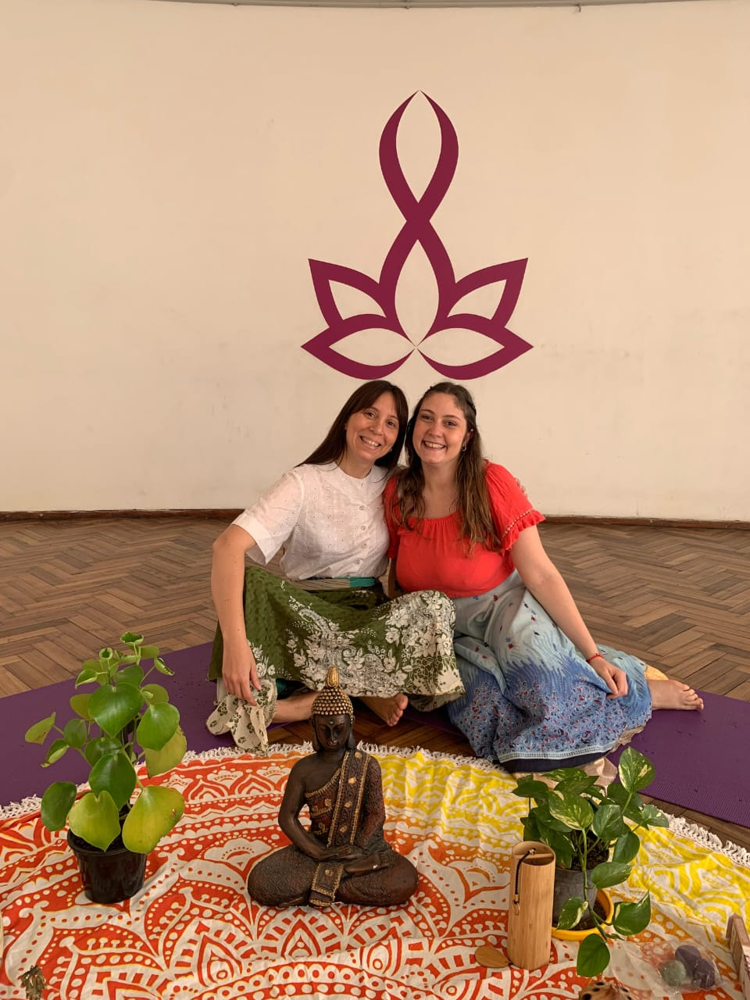

🔮
Sesiones
Registros Akáshicos y Tarot del Alma.
Ir a Lecturas✨ Camino de Estrellas es un espacio de sanación y transformación espiritual.
A través de lecturas, encuentros y terapias energéticas, te acompañamos a reconectar con tu alma, liberar memorias y abrirte a la vida que deseás.
Un viaje de amor, claridad y expansión, guiado por Sol y Claudia.

Registros Akáshicos y Tarot del Alma.
Ir a LecturasTalleres y jornadas de transformación.
Ver EncuentrosConocenos!
Quiénes somosEscribinos para consultas y orientación y enterate de los próximos encuentros.
Contactar